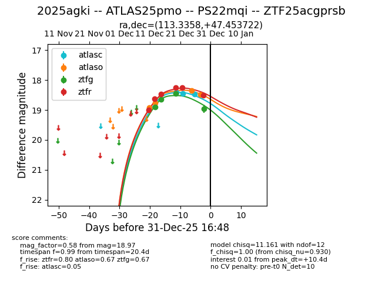
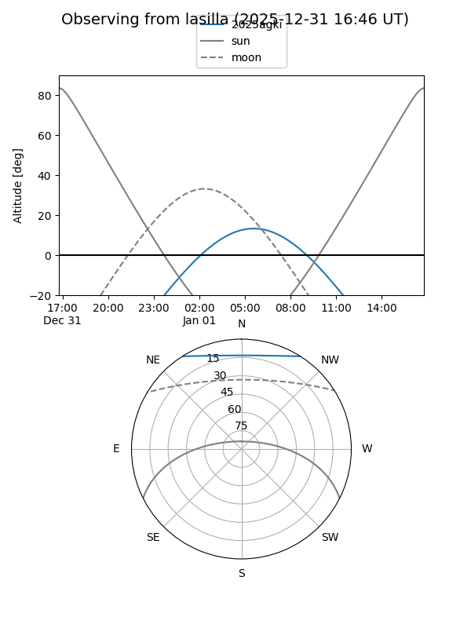
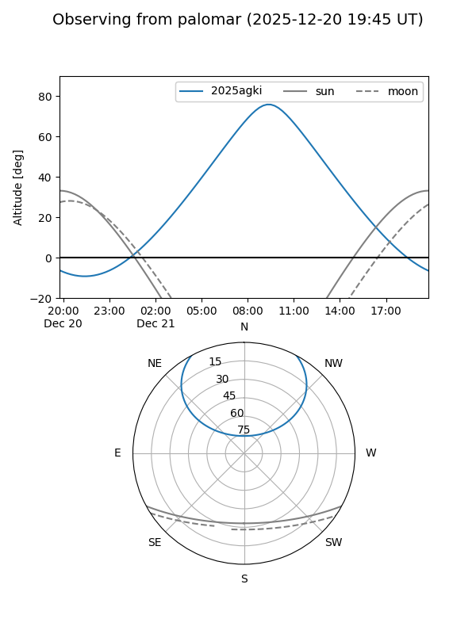
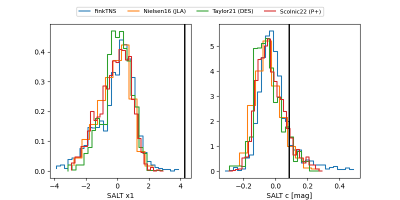

2025agki
Target 2025agki at 2025-12-18 11:18
Aliases and brokers:
FINK: fink-portal.org/ZTF25acgprsb
Lasair: lasair-ztf.lsst.ac.uk/objects/ZTF25acgprsb
ALeRCE: alerce.online/object/ZTF25acgprsb
TNS: wis-tns.org/object/2025agki
YSE: ziggy.ucolick.org/yse/transient_detail/2025agki
alt names
ZTF25acgprsb (ztf,fink_ztf)
2025agki (tns,yse)
ATLAS25pmo (atlas)
Coordinates:
equatorial (ra, dec) = 113.3358,+47.45372
equatorial (HMS+DMS) = 07:33:20.59,+47:27:13.40
galactic (l, b) = (170.8878,+26.44650)
Photometry
last atlaso=18.76, ztfg=18.64, ztfr=18.46
2 atlaso, 2 ztfg, 3 ztfr detections
Lightcurve

Visibility


Additional plots
